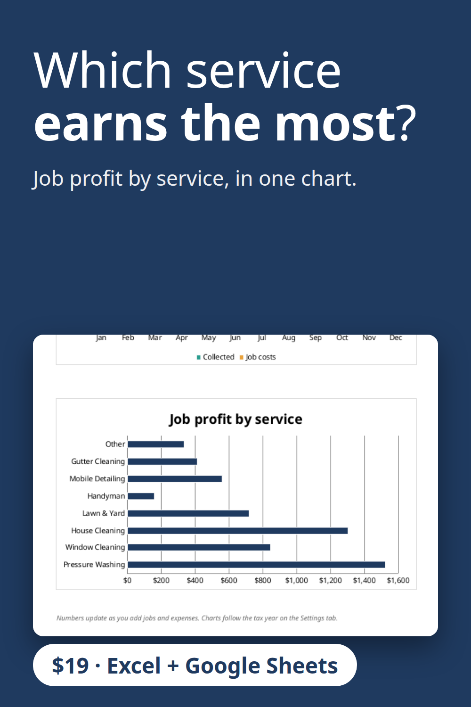

A bookkeeping spreadsheet for service businesses with a job profit by service chart, so you can see whether house cleaning, window cleaning, lawn care or handyman work earns the most. Also tracks unpaid invoices, expenses by category and a tax set-aside estimate. Excel and Google Sheets, no macros. $19 instant download.
Get the $19 version on Gumroad
Built with the help of AI tools, then tested: every report number was recalculated separately.